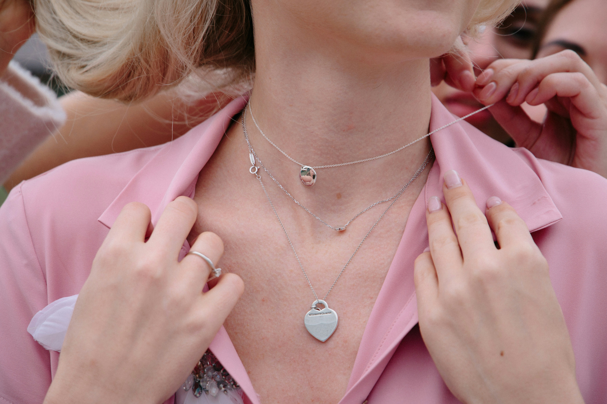

Acerca de Nosotros

Nuestra historia inicia como un gran sueño en el año de 1979, en el Centro Histórico de la Ciudad de Caracas. Una primera tienda ubicada justo en el corazón de nuestro país, donde todo sucede, donde convergen los pilares de nuestra nación. Creemos que el poder histórico que se concentra en esa zona de la ciudad ha permeado en nosotros como marca y hoy es parte de nuestro ADN.
Somos una marca venezolana, impulsada por gente apasionada por su trabajo y comprometida con la misión y visión de Rouge.
Esto nos llena de poder y nos permite ser una marca dinámica, brindar un servicio especializado y cálido a cada uno de nuestros clientes y entregar productos de calidad y belleza extraordinaria.
Desde 1950
Nuestra misión es brindar productos y servicios de joyería y relojería de la más alta calidad.
Deseamos formar parte de los momentos más importantes de la familia venezolana y consolidarnos como referentes en el rubro. Nuestras joyas son piezas que duran para toda la vida.
Todas nuestras piezas están realizadas con mucho amor cuidando cada detalle durante el proceso de fabricación. Te aseguramos que recibirás una pieza de gran calidad.
Con dos generaciones de expertos joyeros que llegaron al país después de la Segunda Guerra Mundial, nuestra historia se remonta la década de los 50.
El negocio familiar, que se inició como Joyería Juan Burg, data de los años de la Caracas afable y social en los tiempos que se paseaba por el Boulevard de Sabana Grande; urbanización que sirvió de cuna a nuestra primera tienda.
Tradición y experiencia

Gracias a la experiencia y tradición en la venta de piedras preciosas a marcas como Bulgari y Cartier, logramos consolidarnos en el segmento de joyas y lujo contando por décadas con el respeto y la confianza de nuestros clientes.
Ya entrado el siglo XXI, surge Rouge, de la mano de una tercera generación llena de creatividad y entusiasmo, con el talento de los nuevos tiempos dándole continuidad y prestigio a su concepto original y manteniendo los valores de confianza, buen trato y discreción que la identifican, junto al respaldo de años de trayectoria en el negocio.
En febrero del 2007 lanzamos nuestra primera colección dentro de una reconocida flagshipstore en Chacao llamada The Spot Flagshipstore y a finales de año establecimos nuestra venta en línea con envíos locales y nacionales. Nuestro objetivo es ayudar a la mujer venezolana a encontrar su propio estilo, cuidando la feminidad y elegancia de cada una de ellas siempre con un producto de calidad y precio justo.